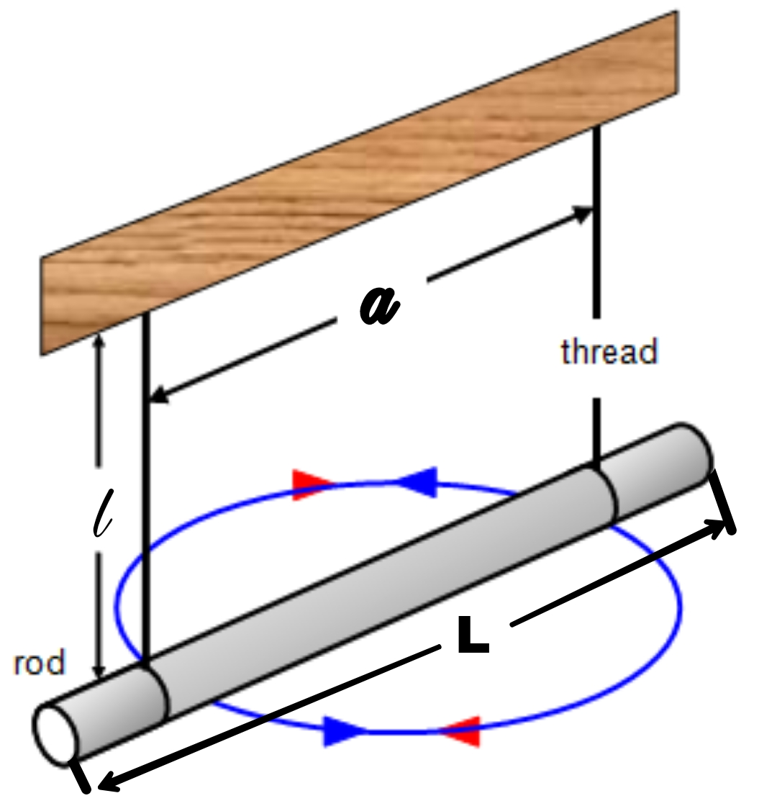
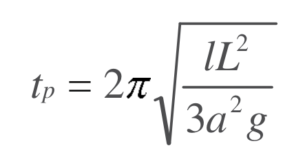

VIRTUAL EXPERIMENTS
VIRTUAL EXPERIMENTSTheory:
The time-period of the rod in Bifilar Suspension is calculated using the following equation:
where,
tp is the Time-period of Vibration (s),
L is the length of rod (m),
l is the Length of each string (m), and
a is the longitudinal distance between the two strings (m).
tp is the Time-period of Vibration (s),
L is the length of rod (m),
l is the Length of each string (m), and
a is the longitudinal distance between the two strings (m).